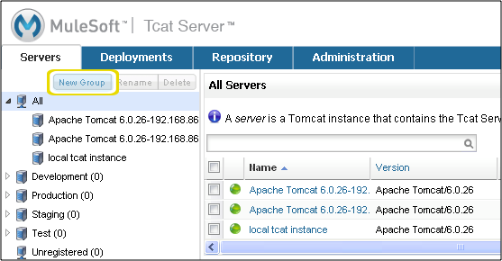
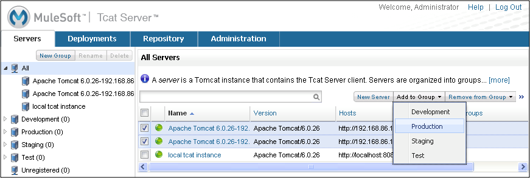

Working with Servers
The Servers tab displays the Tomcat instances that contain the Tcat Server client, allowing you to manage them with Tcat Server. Servers are organized into groups. Click a group in the navigation tree on the left to see its servers, or click All to see all servers. Click a server’s check box to perform actions on it such as adding it to a group, or click the server’s name to view its details.
This page describes how to work with servers. For information on monitoring a server’s details, see Monitoring a Server.
Registering a Server
When you add the Tcat Server client to a Tomcat instance, that instance appears as a server in the Unregistered group on the Servers tab. You can then register it so that you can manage it with Tcat Server.
Note: If your network does not support multicasting or you are connected via VPN, your unregistered servers do not appear in the Unregistered group, and you must register the servers manually instead.
To register a server from the Unregistered group:
-
Select the check box for one or more unregistered servers and click Register. If you want to add it to a server group as you register it, click Register and Add to Group instead and then select the group.
-
Optionally, click a server’s name and type a new name for it. Each name must be unique.
-
When you have finished renaming servers, click Save.
The newly registered server(s) now appear on the Servers tab when you click All in the navigation tree. To add them to a specific group, see the next section.
Using a Server Profile
A server profile is a set of environment variables and files that you can publish to multiple servers at once. You can use the profile to override variables for the operating system, user, and application on a Tomcat instance. You can set the server profile when you are viewing a server’s details, or you can set the profile for multiple servers by selecting them on the Servers tab, clicking Set Profile, and then selecting the profile you want them to use. You can set only one profile per server.
If the server profile contains environment variables that affect the startup of Tomcat, you must restart the servers before these variables can take effect (see below).
|
If you change environment variables outside of Tcat Server and want them to take effect on your Tomcat instance, you must restart Tomcat manually outside of Tcat Server, as Tcat Server uses the environment variables from the current JVM plus those specified in the profile to restart Tomcat. |
For information on creating a server profile, see Working with Server Profiles.
Restarting a Server
You can restart one or more servers by selecting their check boxes and clicking Restart. You can also restart a server when you are viewing its details.
Creating a Server Group
A server group is simply a logical grouping of servers. The All group lists all registered servers, and the Unregistered group lists any servers that contain the Tcat Server client but are not yet being managed by Tcat Server (see "Registering a Server" above).
To create a server group:
-
In the navigation pane on the left side of the Servers tab, click New Group.
 -
Enter a name for this group, and then click OK.
You can now start adding servers to this group. You can also deploy packages to the group, allowing you to deploy all the package’s applications to all the group’s servers in one step.
Renaming a Group
To change the name of a group, select it in the navigation tree, click Rename, enter the new name, and click OK.
Finding a Server
There are several ways to find a server in the Tcat Server Administration Console:
-
Type a server’s name in the search box at the top of the Servers tab and then select it from the list that appears.
-
If you know which group the server is in, click the group’s name in the navigation tree on the left, and then browse through the list of servers in that group.
-
If the server is not a member of a group, click All in the navigation tree to see all servers.
-
If the server is not yet registered to be managed by Tcat Server, click Unregistered.
Adding Servers to a Group
Server groups provide a convenient way to organize your servers, such as those that are in development and those that are in production. You can deploy applications to a server group instead of having to deploy to each individual server in that group. When you deploy applications to a server group, each server you subsequently add to that group immediately has those applications deployed on it.
To add a server to a group:
-
On the Servers tab, select the check box of one or more servers you want to add to a group.
-
Click Add to Group, and then select the group from the drop-down list.
 -
At the confirmation screen, click Yes to add the selected servers to the group and deploy that group’s applications to the servers.
Any applications deployed to this group are now deployed to the servers you added to the group. To undo this action, you can remove one or more servers from the group.
Removing Servers from a Group
When you remove a server from a group, any applications deployed to the group are undeployed from that server, and the server no longer appears when you click that server group in the navigation tree.
To remove servers from the group:
-
Select the check box of one or more servers you want to remove from the group.
-
Click Remove from Group, and then select the group from the drop-down list.
-
At the confirmation screen, click Yes to remove the selected servers from the group and undeploy that group’s applications from the servers.
Deleting a Server Group
If you no longer need a server group, you can delete it from the system. Deleting a server group does not delete the servers in that group but simply deletes the grouping. However, it does undeploy all the applications that were deployed to the group.
To delete a server group, select that group in the navigation tree, click Delete, and then click OK to confirm that you want to delete the group and undeploy all its applications from the servers in that group.
Unregistering a Server
If you no longer need a server in your server inventory, you can remove it from the repository.
To remove a server:
-
Select the check box of one or more servers you want to unregister.
-
Click Unregister.
-
At the confirmation screen, click Yes to unregister the selected server(s) so that you can no longer manage them with the Tcat Server Administration Console.
These servers no longer appear in the groups to which they were previously assigned nor in the All group.
If the console becomes unavailable and you want to unregister its servers so that you can register them with another console, you must manually delete the webapps\agent\WEB-INF\truststore.jks file under each server to unregister it. The server then becomes available again for registering in another console.
Manually Adding a Server
In some cases, an unregistered server does not appear in the Unregistered group. This can happen if multicasting is not supported in your network, if you are connected via VPN, or if there was an error after you unregistered a server. In this case, you can register the server manually by clicking New Server. You then enter a name for the server and the server agent’s URL, such as http://localhost:8080/agent (replacing localhost and 8080 with the correct host and port).
For additional troubleshooting tips, see Troubleshooting.